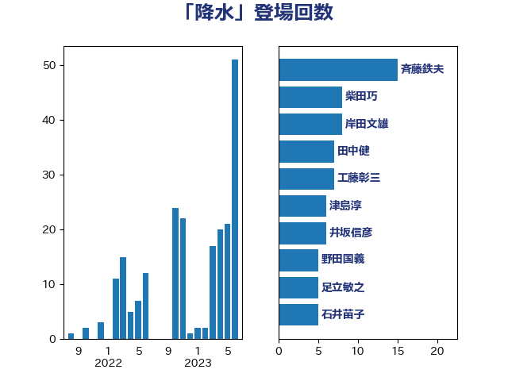

単語「降水」

| 赤羽一嘉 | 公明党 | 21 回 |
| 足立敏之 | 自由民主党 | 11 回 |
| 緑川貴士 | 立憲民主党 | 9 回 |
| 大口善徳 | 公明党 | 6 回 |
| 大野泰正 | 自由民主党 | 6 回 |
| 室井邦彦 | 日本維新の会 | 4 回 |
| 平木大作 | 公明党 | 4 回 |
| 斉藤鉄夫 | 公明党 | 4 回 |
| 馬場成志 | 自由民主党 | 4 回 |
| 尾崎正直 | 自由民主党 | 3 回 |
| 山口那津男 | 公明党 | 3 回 |
| 岸田文雄 | 自由民主党 | 3 回 |
| 日下正喜 | 公明党 | 3 回 |
| 杉久武 | 公明党 | 3 回 |
| 美延映夫 | 日本維新の会 | 3 回 |
| 酒井庸行 | 自由民主党 | 3 回 |
| 井上英孝 | 日本維新の会 | 2 回 |
| 古賀之士 | 立憲民主党 | 2 回 |
| 塩田博昭 | 公明党 | 2 回 |
| 岩本剛人 | 自由民主党 | 2 回 |
| 岩田和親 | 自由民主党 | 2 回 |
| 江島潔 | 自由民主党 | 2 回 |
| 清水真人 | 自由民主党 | 2 回 |
| 渡辺猛之 | 自由民主党 | 2 回 |
| 中川宏昌 | 公明党 | 1 回 |
| 井上貴博 | 自由民主党 | 1 回 |
| 吉田宣弘 | 公明党 | 1 回 |
| 吉田忠智 | 立憲民主党 | 1 回 |
| 和田義明 | 自由民主党 | 1 回 |
| 大西英男 | 自由民主党 | 1 回 |
| 岡本三成 | 公明党 | 1 回 |
| 岩渕友 | 日本共産党 | 1 回 |
| 工藤彰三 | 自由民主党 | 1 回 |
| 平口洋 | 自由民主党 | 1 回 |
| 末松信介 | 自由民主党 | 1 回 |
| 森山浩行 | 立憲民主党 | 1 回 |
| 浅野哲 | 国民民主党 | 1 回 |
| 熊谷裕人 | 立憲民主党 | 1 回 |
| 甘利明 | 自由民主党 | 1 回 |
| 白石洋一 | 立憲民主党 | 1 回 |
| 石井啓一 | 公明党 | 1 回 |
| 神津たけし | 立憲民主党 | 1 回 |
| 竹内真二 | 公明党 | 1 回 |
| 若松謙維 | 公明党 | 1 回 |
| 菅家一郎 | 自由民主党 | 1 回 |
| 赤池誠章 | 自由民主党 | 1 回 |
| 鈴木敦 | 国民民主党 | 1 回 |
| 長峯誠 | 自由民主党 | 1 回 |
| 青木愛 | 立憲民主党 | 1 回 |